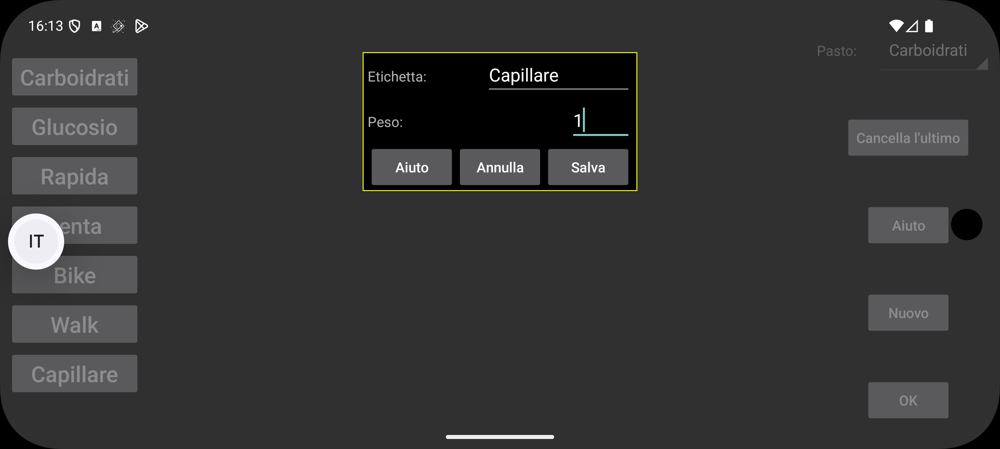

ar be de es fr hi it ja ko nl pl pt ru tr uk uz zh en
Nome dell'etichetta da usare per inserire numeri. Puoi aggiungere un numero collegato a una certa data e ora usando "Nuovo valore" nel menu centrale sinistro. Questi numeri possono essere visualizzati nel grafico del glucosio in quella posizione temporale o in una lista.
Usato nell'app per orologio, Kerfstok. I numeri inseriti sotto questa etichetta vengono arrotondati a questo numero.
0= massima precisione, 0.5 = arrotonda a multipli di 0.5 ecc.
Quando impostato a 0, i numeri sono mostrati a una certa altezza nel grafico indipendentemente dal loro valore. Se il peso è maggiore di 0, ogni valore inserito sotto questa etichetta viene moltiplicato per questo peso e mostrato come un quadrato nelle stesse coordinate del grafico del glucosio. Ad esempio, puoi impostare il peso a 1 per visualizzare le misurazioni di glucosio da puntura del dito allo stesso modo delle misurazioni del sensore di glucosio.